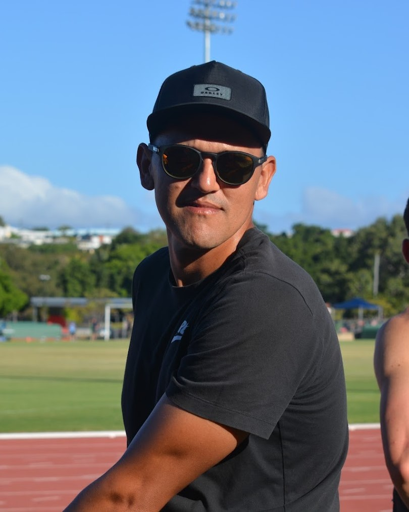

ABOUT US
We are ASPIRE Cairns, an Athletics squad based in Cairns, Far North Queensland. We offer a positive training environment aimed at our developing athletes. Our goal is to provide a safe, inclusive, diverse and fun environment which enables our athletes to learn and develop an all-round athletic ability comprising of the five fitness components Speed, Endurance, Strength, Coordination and Flexibility.
We believe our training environment is the key to our success. We have managed to create a positive, encouraging, and accountable environment where athletes feel comfortable taking risks, learning from their mistakes, and reaching their full potential. We are committed to helping athletes achieve their goals, and we believe that everyone has the ability to succeed.The Coach

National Qualifiers
State Medals
State Champions
National Medals
OUR SQUAD
We pride ourselves on providing a strong personal relationship between every athlete and the coach. This is achievable by selecting athletes based on a long-term commitment to our program and limiting the number of athletes we take on.
Our squad consists of athletes who are dedicated to taking the next step in their athletic journey specific to Track and Field. Our program runs year round covering events ranging from the 100m through to Cross Country with a strong emphasis on the Australian Domestic Season.
CURRENT AVAILABILITY
We have limited availability on our squad and only accept athletes on a case-by-case basis. Please follow us on Facebook and Instagram for the latest news and any updates on vacancies.
Alternatively you can reach out to us via email or come and have a chat when you see us at the track.
Email: aspirecairns@gmail.com